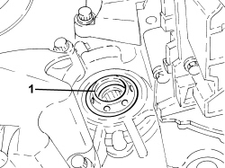
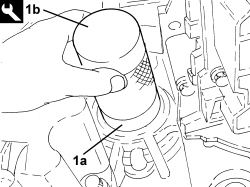

2130C38 OIL SEAL FOR RH DIFFERENTIAL SHAFT - R R
- Path
- Procedures > 21 GEARBOX UNIT > 2130 AUTOMATIC TRANSMISSION WITH DIFFERENTIAL > 2130C AUTOMATIC TRANSMISSION DIFFERENTIAL > 2130C38 OIL SEAL FOR RH DIFFERENTIAL SHAFT - R R
- Kind
- repair procedure (removal / refitting; the operation number is the code)
- Applies to
- engines: 2.2, 2.4 JTD 20v; all production periods; only with equipment: AUTOMATIC TRANSMISSION
- Interactive page
- https://sloeber94.github.io/elrnDB-fCrm/en/#/194002332
Applies to: engines: 2.2; all production periods
 Removing
Removing
 Refitting
RefittingOp. 2710A10 DRIVESHAFT WITH JOINTS (ONE), L/H OR R/H - R + R
Op. 2710A31 INTERMEDIATE DRIVESHAFT - R R
1. Release and remove the right differential shaft oil seal.

Applies to: engines: 2.2; all production periods
Refitting
Removing- Moisten a new right differential shaft oil seal with transmission fluid.
1. Place the new differential right shaft oil seal (1a) in its housing
Tool | Description | Function | Validity |
|---|---|---|---|
1.870225002 | Fitting tool | Fitting differential right shaft oil seal | 2.2 CAE |

Applies to: engines: 2.2; all production periods
Op. 2710A31 INTERMEDIATE DRIVESHAFT - R R
Op. 2710A10 DRIVESHAFT WITH JOINTS (ONE), L/H OR R/H - R + R
Applies to: engines: 2.4 JTD 20v; all production periods
Removing
RefittingOp. 2710A14 RIGHT DRIVESHAFT WITH JOINTS AND INTERMEDIATE DRIVESHAFT - R+R
- Release and remove the right differential shaft oil seal.
Applies to: engines: 2.4 JTD 20v; all production periods
Refitting
Removing- Moisten a new right differential shaft oil seal with transmission fluid.
- Place the new right differential shaft oil seal in its housing
Op. 2710A14 RIGHT DRIVESHAFT WITH JOINTS AND INTERMEDIATE DRIVESHAFT - R+R